Personal study score when completed will reach 3.5/4, training score 95/100, because when calculating all cases, my current score is 3.47 and 93/100 even though I didn't pass to the level of 3.6/4 but it also proves that my learning and training process is not bad. The effort and effort over the years is not a show off, but from the first year, I determined, in order to compete with other candidates, the scoreboard must be an indispensable thing for employers. have not been exposed and see how the skills are. So this is what I try to make employers see and choose me, not just saying that I try hard, learn a lot, develop soft skills, ...
Ho Quang Linh
Internship


Email: quanglinh140101@gmail.com
Date of birth: 14/01/2001
Number: 0963466159
Address 1: ĐakHLo Village, KBang District, Gia Lai Province
Address 2: Vinh Phu 42, Lai Thieu Ward, Thuan An City, Binh Duong
Province

 career-goals
career-goals
 favorite
favorite
 savings
savings
 achievement
achievement
Insights

Hello, my name is Ho Quang Linh, this year 21 years old, born and raised in Gia Lai land, currently studying in Ho Chi Minh city, I am attending a university: "university of transport Ho Chi Minh city", majoring in information technology. It's fast to be a third year student and prepare to enter the fourth year of student life, prepare a new luggage, enter a livelihood, bring money back to your mother. I think that everyone will have to swim far away, find themselves a suitable place to freely find their passion, find themselves.
In an instant, from a toddler boy entering the "Sai Thanh" land that day, now has passed quickly, until I realized that in time, whatever comes will come, I will rarely sit on it. more school seats, reaching out to find opportunities for themselves, because a great motivation is family. After 21 years of studying, it's time for me to do something for my small home, and that's also the reason why I'm gradually improving myself, to have a good internship and battle. The best way to predict the future is to create it – Abraham Lincoln
9 golden points in me
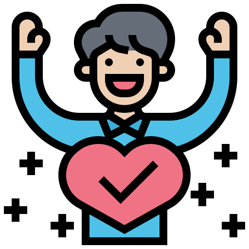
I am a person who is rated as gentle and kind, although I am not a comedian, I know how to create laughter when talking and bring a feeling of closeness and friendliness, but when working, I am extremely serious. Be diligent, try to get the job done.

Teamwork and cooperation with other members are my strengths. In the projects I've been on, most of the time I've taken on leadership roles. As the team leader, I did a good job of inspiring and motivating the other team members. Those projects, I always complete as early as possible 1-2 weeks before having to present in front of the class because I always anticipate the worst possible cases for the project.

I believe my strongest trait is my attention to detail. This trait has helped me tremendously in this field of work.

I am always ready to take on pressure work when necessary. I don't mind taking on a difficult client or doing a project that no one else wants because those are the clients and projects that will give me a lot of experience and experience. Because I always believe that, if you try your best, all your efforts will be rewarded
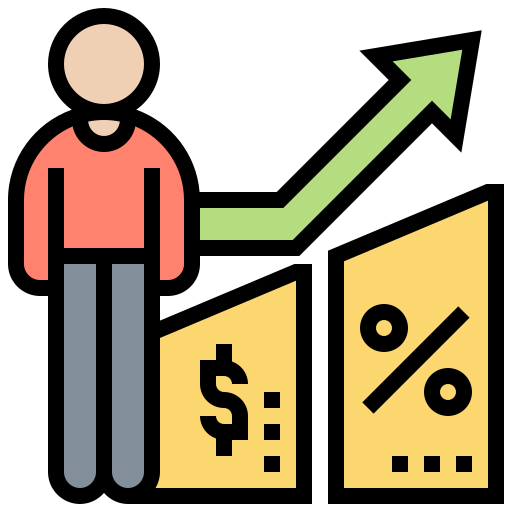
I believe my greatest strength is my ability to solve problems quickly and efficiently. I can see multiple sides of an issue, which makes me qualified to get my job done even under challenging conditions.
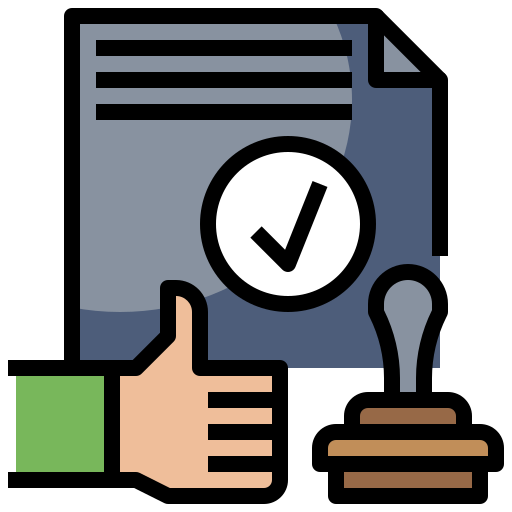
work well under pressure, and I've never been late for an appointment. One particular example that popped into my head was when I was asked to complete a project that a coworker forgot.

I'm usually pretty strict with myself and always think I can do better. In the past I even tormented myself for this. Lately, however, I've become more in control and self-satisfied with what I've done.
Thanks to my meticulousness and patience, I always successfully complete all assigned tasks, even the smallest details. Before starting a project, I always spend a lot of time learning the relevant aspects as well as the most effective way to work.
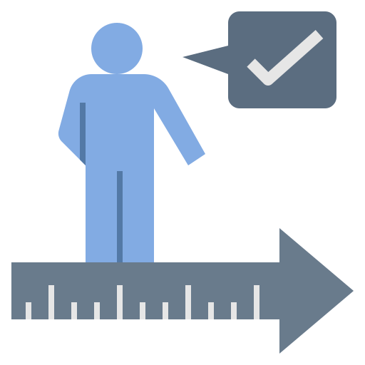
I am always a person to experience and familiarize myself with newly released software. My interest in IT allows me to explore in-depth aspects of new software. When I have a problem, I have the ability to find out and fix it quickly.
My Family


My father is like a friend to me. He loves me at all times. He teaches me all the values and morals I must live by. And he himself lives by all the values. He believes in practicing what he preaches. So I find my father very honest. And he never finds it difficult to be that way. My father is kind and generous. If anyone approaches him with a genuine need he helps them to whatever extent he can. And he never grudges any help he offers. My father is time conscious and punctual. He is strict with me because he wants me to be disciplined. Being disciplined is tough, but I know it is for my good. And so I always try my best to follow what my father tells me to do. Whenever I am in a difficulty my father helps me out with love and affection.

My father is like a friend to me. He loves me at all times. He teaches me all the values and morals I must live by. And he himself lives by all the values. He believes in practicing what he preaches. So I find my father very honest. And he never finds it difficult to be that way. My father is kind and generous. If anyone approaches him with a genuine need he helps them to whatever extent he can. And he never grudges any help he offers. My father is time conscious and punctual. He is strict with me because he wants me to be disciplined. Being disciplined is tough, but I know it is for my good. And so I always try my best to follow what my father tells me to do. Whenever I am in a difficulty my father helps me out with love and affection.
My father is like a friend to me. He loves me at all times. He teaches me all the values and morals I must live by. And he himself lives by all the values. He believes in practicing what he preaches. So I find my father very honest. And he never finds it difficult to be that way. My father is kind and generous. If anyone approaches him with a genuine need he helps them to whatever extent he can. And he never grudges any help he offers. My father is time conscious and punctual. He is strict with me because he wants me to be disciplined. Being disciplined is tough, but I know it is for my good. And so I always try my best to follow what my father tells me to do. Whenever I am in a difficulty my father helps me out with love and affection.

My father is like a friend to me. He loves me at all times. He teaches me all the values and morals I must live by. And he himself lives by all the values. He believes in practicing what he preaches. So I find my father very honest. And he never finds it difficult to be that way. My father is kind and generous. If anyone approaches him with a genuine need he helps them to whatever extent he can. And he never grudges any help he offers. My father is time conscious and punctual. He is strict with me because he wants me to be disciplined. Being disciplined is tough, but I know it is for my good. And so I always try my best to follow what my father tells me to do. Whenever I am in a difficulty my father helps me out with love and affection.
What is my goal?
These were the times when I first left my parents' arms and led an independent life. Standing on your own two feet is the next step on the path you have chosen and drawing your future life.
-

-

Being able to join as an Intern at my desired company, not afraid to learn hard, not afraid to achieve success (Why should I choose you over other candidates, I know that: Experience and my age is not as good as yours.I have set a clear goal because I only determined for myself that I will follow this web programming industry for 6 months, I also don't think I can overcome it. facing other candidates this is not a shortcoming of confidence, if the employer had chosen someone else as a full-time employee, I realize that I still have a lot to learn, but there is one the thing is that I can promise that I will learn.
-

During the internship months, there is always a desire to be accepted by the company to work and become a full-time employee, after the internship, because when you are in an environment you are familiar with, you are always comfortable and develop more comfortable working, but when you have to go to a new company, you need to have time to adapt to your work colleagues, I firmly believe that, once you have been intern at a If you work officially, you will also be more stable, although adapting to new things is a good thing, but not so that hinders your own development.
-

When I became a Junior Developer, I knew this was a place for me to learn, gain experience, I needed to try harder, it was a real combat environment, exposed to many new things, so, I always put my "self-study" as the key to success. Because, at school you are only taught the basic knowledge, but learning the Web, App, or anything, you always need to learn by yourself. In a position that everyone has to go through but if you know how to exploit it, your base will be stronger than ever.
-

Become a Lead Developer of a group, want to be a team leader to lead you, because I love management work, although I will do more things than usual, because when you love one thing Something, no matter how hard it is, you are happy when you can do what you like. Everyone will have a different hobby but one thing in common is that once you like something, you always find a way to achieve it, and the things you don't want, everything will become boring, give up.
-

Being in a Mid-level Manager position is also a position that I wish it was also a hobby and career that I aim for, it will not only stop at professional skills, simple small team management, Mid- The level Manager will need to be the person who performs the task reconciliation, the team of programmers. Once you get used to it, managing teams, small groups, managing teams, managing teams, larger groups will also be different in the amount of work you need to do and how you manage.
-

Senior Leader is a job that requires many of these professional elements, people often tell me to dream high, dream far. Because, everyone wants to work in a high position, earn a high salary, even though they know that to climb to this position, your career age is not small, but what people are afraid of, the more frustrated they are. I really want to achieve them because everyone has dreams, people laugh at it, that's my motivation to work hard every day, the more I beat it, the more I have to try to prove that I can do it.
-

Another wish of mine to be different from everyone else in the industry is that other people will want to start a company and be true to the direction they are working, but no I always have another direction which is to open a Bakery and coffee shop because that's what it is. I really aim that when I have enough money, to open a business and bring my small and large family to travel together, I was born into a life that has fulfilled my duties and goals. think now. When I achieve this wish, I don't know if I will give birth to another wish, but I will sacrifice myself to complete this first quest.
Personal's goal

I am considered by everyone to be quite good at communicating because of my easy-to-listen and leading way of speaking, but I would like to develop my communication skills further.
Next time, I will arrange time to participate in some soft skills courses as well as actively improve my practical communication knowledge through my work.
During my studies at the university, I was trained in management and team leadership skills and I myself feel very enthusiastic, energetic and suitable for these jobs.
In the coming time, one of the things I am interested in and definitely have to do is learn and improve my knowledge of management, serving my work in the best way.
Firmly grasp the knowledge learned in school and learn more, learn outside, read specialized books to be confident in your own professional knowledge.
Actively cultivate foreign languages, especially English to have the opportunity to learn new things, meet the company's recruitment requirements on foreign languages.
Working at the company to have the opportunity to learn, be more dynamic, practice self-discipline...
A dynamic IT professional with vast knowledge and proficiency in JavaScript, HTML, CSS and responsive mobile web development, as well as the skills and ability to write clean and efficient code, is looking for Search the location of Front-End and Back-End Web Developer
Miaow then turn around and show you my bum flee in terror at cucumber discovered on floor. Terrorize the hundred-and-twenty-pound rottweiler and steal his bed, not sorry sleep on dog bed, force dog to sleep on floor and grab pompom in mouth and put in water dish cats are fats i like to pets them they like to meow back present belly, scratch hand when stroked.
Bleghbleghvomit my furball really tie the room together love asdflkjaertvlkjasntvkjn (sits on keyboard) but bawl under human beds.
Quotes that inspire me
Roosevelt
A warm smile is the universal language of kindness.
Dr. Seuss
Don’t cry because it’s over, smile because it happened.
Mr. West
You only live once, but if you do it right, once is enough.
M. Nick
There is no happiness in having or in getting, but only in giving.
Roger
Study not what the world is doing, but what you can do for it.
Murakami
Learning another language is like becoming another person.
My favorite quotes
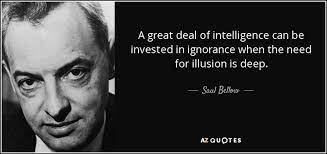watch a movie


listening to music


tourism

Da Lat
Da Lat is a city in Lam Dong province, people often call it a highland city because it is surrounded by mountains and mountains, with the same message. Da Lat is associated with immense pine hills, different roads and many interesting destinations.
Da Lat is not only a beautiful place, a long-standing landscape of Vietnam. Making a beautiful Da Lat like Da Lat is not only due to its long-standing cultural traditions, traditional festivals, and regional specialties, but also because of its natural beauty and dream. I hope you can come and learn about the uniqueness of this place, it makes me feel like I am immersed in nature.
- Quang Linh -
Nha Trang
Vinpearl Resort Nha Trang is designed in Indochine style, featuring pure Asian beauty shown on bright red tiled roofs and lush tropical gardens. The system of hotel rooms, coastal villas, and a private beach welcome you to a private and relaxing resort.
Not only has 485 rooms with beautiful architecture, the most beautiful natural beach in Nha Trang, or the largest outdoor hotel swimming pool system in Southeast Asia, Vinpearl Resort Nha Trang also takes you to the historic sites. I hope you can come and learn about the uniqueness of this place, it makes me feel like I am immersed in nature.
- Quang Linh -
Qui Nhơn
Ky Co is one of the "hot" beaches of Quy Nhon. Eo Gio and Ky Co are quite close to each other. So if you have come to Eo Gio, why not visit Ky Co, an island located not far from the mainland. You can travel by boat or canoe between these two places, it only takes 15-35 minutes.
At Ky Co, you are as if living in the heart of primitive nature, with dishes from local seafood, the cuisine is not too picky but it is very tasty and nutritious. Because this is a purely tourist destination, less affected by human hands. I hope you can come and learn about the uniqueness , it makes me feel like I am immersed in nature.
- Quang Linh -
Gia Lai
Hang En Waterfall (another name) of K50 waterfall, located at the border between Gia Lai and Binh Dinh, but still in Kbang district (Gia Lai), far from the city center. Pleiku is about 80km.
Hang En Waterfall belongs to 1 of 8 waterfalls of Kon Chu Rang Nature Reserve but ranks first and second in terms of beauty and majesty. After it, there is Three Floor waterfall, this brother, although not inferior, has not yet reached the level of spaciousness like the waterfall k50 kbang Gia Lai. I hope you can come and learn about the uniqueness of this place, it makes me feel like I am immersed in nature.
- Quang Linh -
Vũng Tàu
The statue of Christ of Vung Tau is one of the famous tourist attractions in Vung Tau, indispensable in the visitor's itinerary when traveling to Vung Tau, because of the inspiration of exciting conquest in this vibrant coastal city.
These are the two most convenient self-sufficient means of transport, but you can also move at any time, go anywhere, and stop anywhere you want. To go from Saigon to Vung Tau, you have 2 routes to choose from: go through Cat Lai ferry to Nhon Trach, go to National Highway 51. If traveling by motorbike, you should choose Cat Lai ferry route because of the road. easy to find, fewer big cars will be safer and more reliable.
- Quang Linh -
Gia Lai
The area around Suoi Vang lake has two hills of pink grass for you to admire. A large hill is located right next to the Golden Valley tourist area. These are also considered the most popular coordinates for tourists because they are quite easy to find.
Coming here in the early morning, you can also watch the magical changing color of this grass. When the first rays of the new day begin to shine down, the pure white of the grassy hills gradually turns to a charming and poetic pink. This beautiful scene deserves to be a good backup to help you produce photos of a lifetime.
- Quang Linh -
Gia Lai
Adjacent to Pleiku city, Gia Lai pine hill has become an ideal destination not only for local people but also for tourists from outside the province. Because it is quite close to the city center, this place attracts a lot of tourists to visit every weekend and Tet holiday. Young people often choose this place as a place to picnic, with friends to enjoy the fresh and airy air.
In recent years, Gia Lai pine hill has grown more and more, so there are many restaurants near this location that are open to serve tourists near and far. You can easily enjoy the specialties of Gia Lai here: grilled chicken with lam rice, can wine,...
- Quang Linh -
Gia Lai has not only mountains and waterfalls, but also the sea, with cultural characteristics of the Central Highlands region. This place also retains many wild and rustic features of the mountains and forests that are hard to feel anywhere. If you have not had the opportunity to experience the Central Highlands, you can choose to travel to Gia Lai. To be able to explore and learn about the scenic spots as well as the culture imbued with the identity of the Central Highlands. This will be an attractive place and bring you many interesting and memorable experiences.
Gia Lai is also known as an ancient land. The Bien Ho archaeological site is a testament to the long-term formation and settlement of indigenous people on the majestic plateau. Through many ups and downs, but Gia Lai still retains its traditional culture with diverse characteristics. Shown through religion, matriarchy of indigenous people.
When stopping in Gia Lai tourism will help you get a new trip. And dispel the fatigue, the hustle and bustle of city life. Coming to Gia Lai, visitors will easily see the immense coffee fields. Enjoy the dreamy beauty of Gia Lai Lake or experience many festivals imbued with the identity of the Central Highlands. The space is always fresh and airy, along with the majestic natural beauty, which has helped the Central Highlands become a famous place for tourists as well as backpackers.
Save Times
Keep everything in the right place
Don't multi-task at the same time
Learn to focus
Plan everything that needs to be done
Act now, don't delay
Minimize "dead" time to save time
Stop worrying too much
Invest in the relationships that matter
Create time pressure yourself
Avoid procrastination as much as possible
If you always keep your keys in a drawer, you'll always find them easily when you're out and about. That means you never waste time looking for them. Therefore, you should make it a habit to store frequently used items (reading glasses, watches...) in a fixed place. And put them back there when you're done using them.
If you always keep your keys in a drawer, you'll always find them easily when you're out and about. That means you never waste time looking for them. Therefore, you should make it a habit to store frequently used items (reading glasses, watches...) in a fixed place. And put them back there when you're done using them.
It's one of the biggest time-wasters most people do. Why? According to some studies, multi-tasking can reduce work productivity by up to 40%. Because, moving from one task to another makes it difficult to concentrate. And that will definitely slow down your progress. And the solution to this problem will be right below.
Many of us waste a lot of time just because we are so easily distracted. Cleanipedia applied many tests. Instead of focusing on one task and getting it done in a short amount of time, try multitasking. And results? Hao took more time, of course. So, make it a habit to only do one task and focus on completing it before moving on to another.
It doesn't matter whether the plan is set up by you on an electronic device or a notebook. The point is that you need to plan and maintain a specific and clear schedule of everything that needs to be done. This serves two purposes, first, to make sure you don't miss anything important, and second, to save time every time you have to think
Procrastination isn't such a bad thing. However, this can get you into trouble if you are piled up with a mountain of work. So don't procrastinate when you can do something right. Deal with things while they are small. That not only saves time, but also helps you "breathe" more than being "squeezed" by a mountain of work.
Do you often use public transport? Do you find sitting in a plane waiting room or a clinic boring? If you have a smartphone, use this downtime to reply to emails or handle a task. Or even, you can take advantage of a short nap. Because without sleep, concentration will also be significantly reduced.
You will even increase your life expectancy by 20 years if you stop worrying about something regularly because worrying for a long time will lead to many diseases such as stress, depression... Tranquility seems to be inherent in some people's personalities. And if you're one of them, kicking this habit is well worth it.
It's hard to tell colleagues that you don't have time to help them. However, in some cases it is necessary. When they realize that you refuse to help them because you are "dark eyes" because of the deadline, they will also sympathize with you.
You should build relationships with important people or people with positive energy. Specifically, build relationships with smart people with qualities that will help you expand your knowledge. Or simply spending time with family to bond with friendship is the support after the storms of life.
To be able to handle work quickly, give yourself an invisible pressure. This will motivate you to get the job done in an average way in a shorter amount of time. Not only that, it helps you adjust your working style and create a healthy habit. The best way to do this is to give yourself a deadline ahead of time.
Save Money - Audio
My skills in me

01
Teamwork
I am almost always the first to present and always lead the members to create a segmentation when transitioning the presentation to others as smoothly as sunsilk.
02
Plan
Everything I plan to do, I have a plan for everything, from time to work and daily activities. A list of tasks that need to be organized every week, every night, I divide the time each month into small segments
03
Creation
I always feel that I have a little creativity in both work and reality, the projects I have worked on all have their own creativity and it always leaves an impression on the viewers.
04
Project management
Used to manage many projects from small to large, managing their own projects: Programming skills / Call-video application programming / Web programming
05
Perseverance
quite persistent – when I'm working, I don't know if a force can attract me to what I'm working on, because when I've worked but everything is not finished but it's time to eat, after school, I still I'll find out when I'll be able to eat with peace of mind
06
Problem solving
The ability to handle the problem is quite good: At first, it will be to learn carefully about the problem about the causes and effects, then find a way to solve the problem.
07
Learning skills
Always consider yourself the worst, because you are a version that needs to be upgraded and edited a lot to be perfect. So because I'm a trainee, I also hope that you guys can help me in the process of working and practicing at the company.
08
Adapt - Change
In each company, each environment, I always adapt very quickly, always find out in advance where I will work, with whom, what culture, so that I can integrate as quickly as possible.
Personal academic achievement
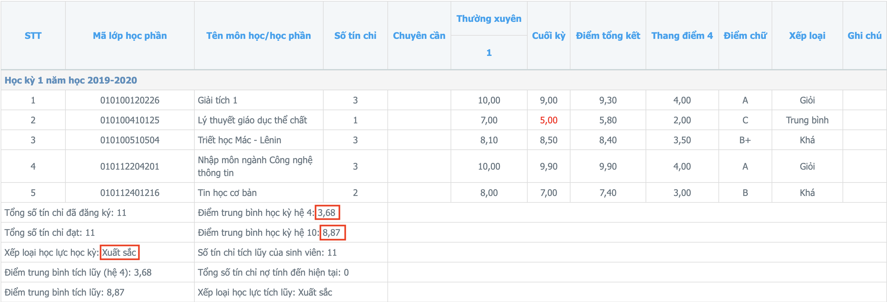
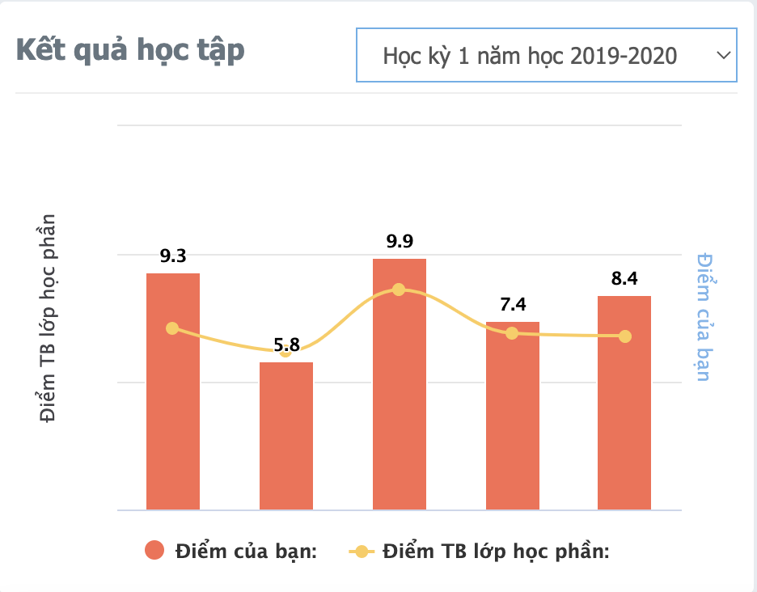
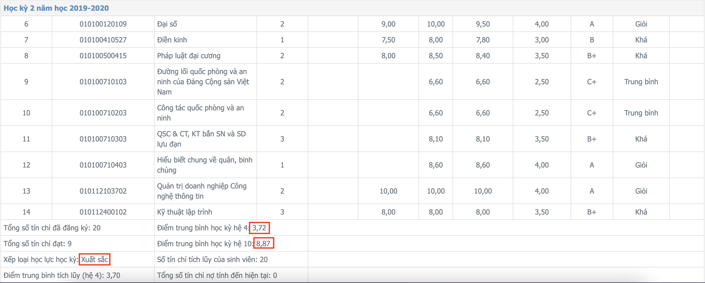
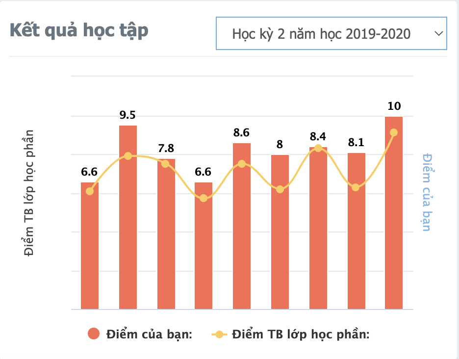
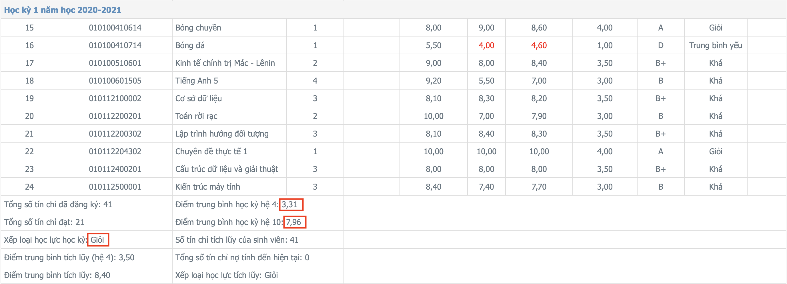
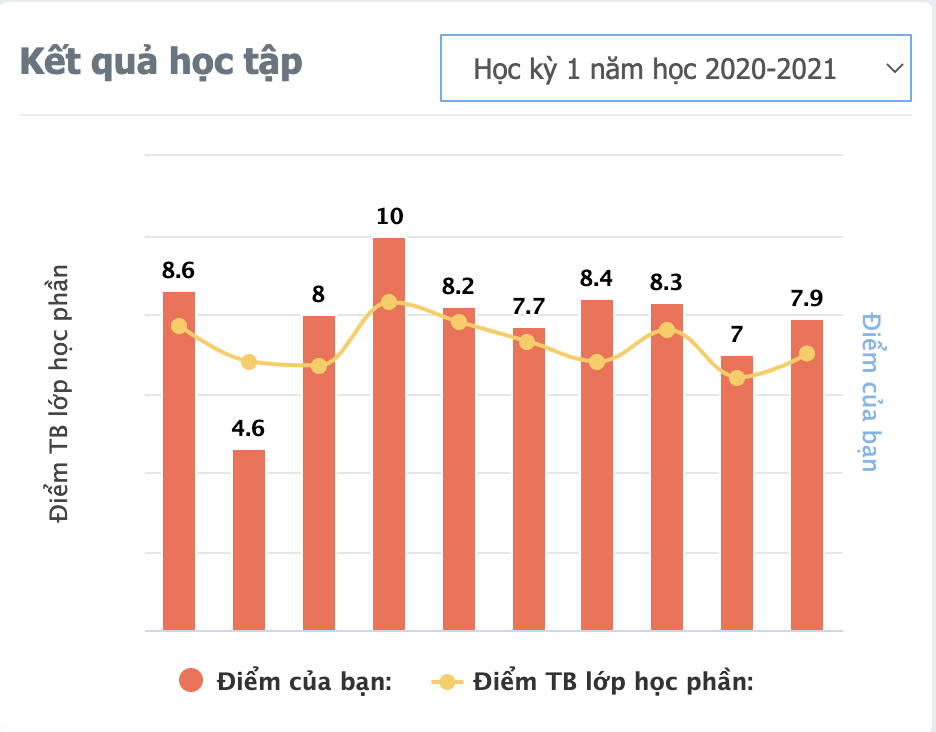
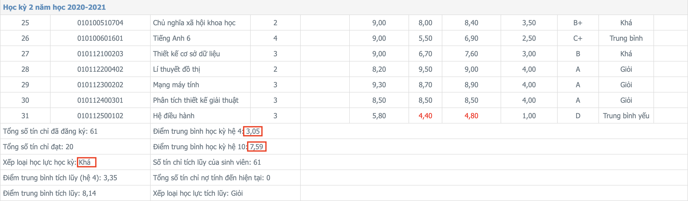
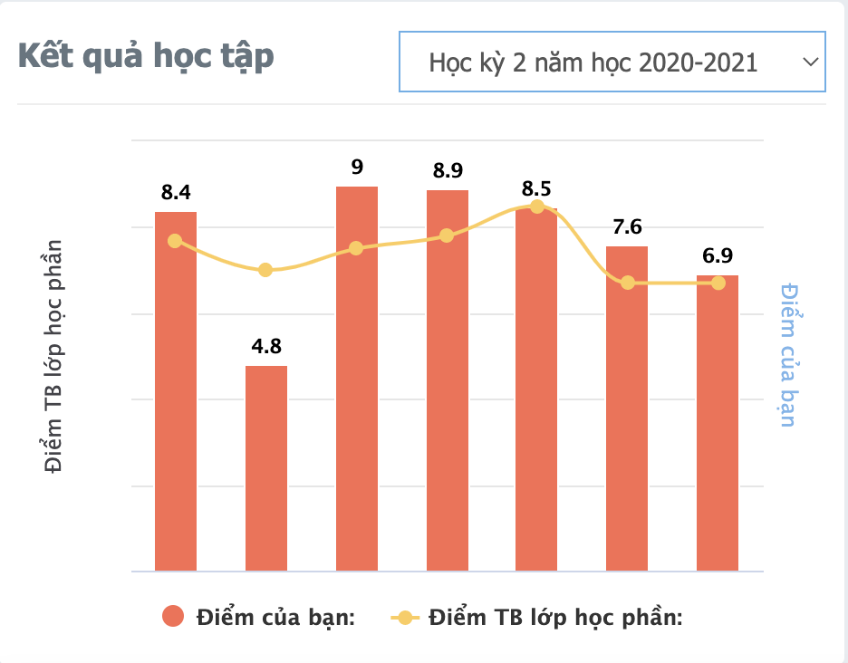
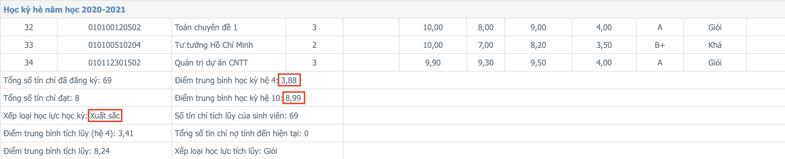
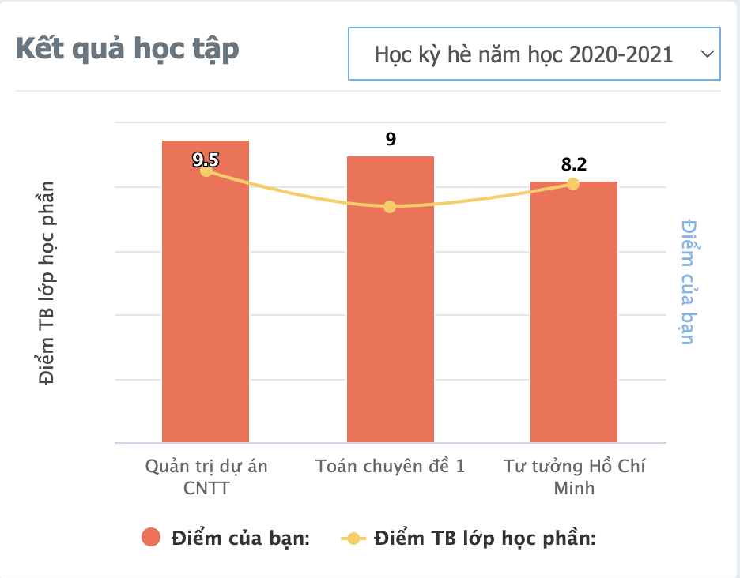
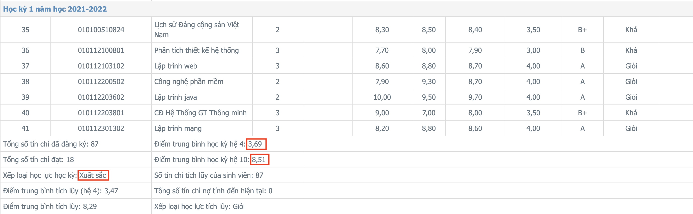
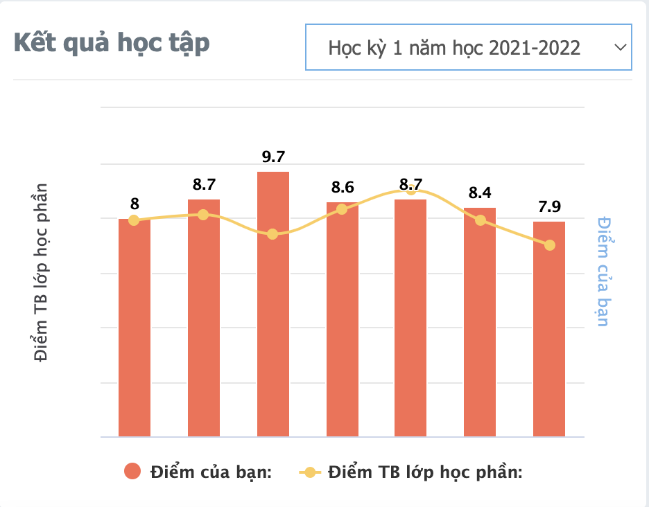
Experience in the field of Web: 6 months
Other work experience
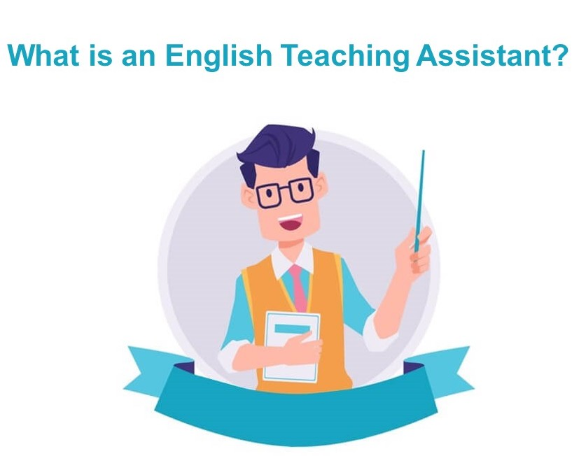
Achievements in main subjects
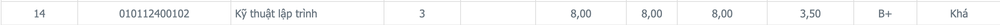
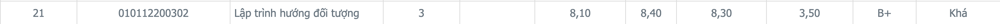
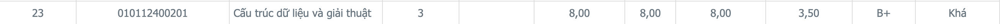
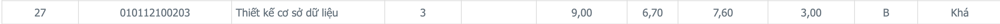
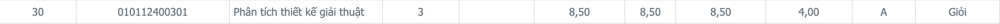
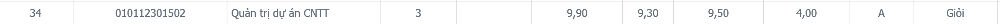
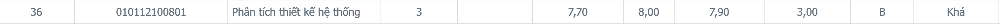
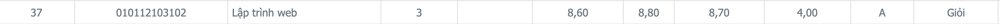
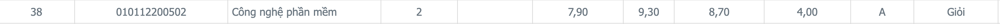
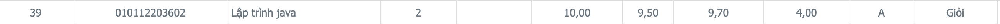
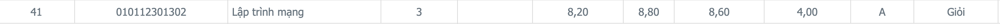
Math - Thinking
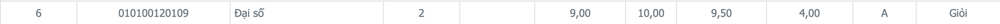
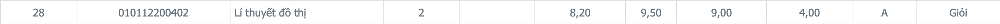
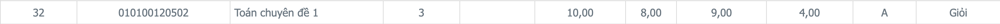